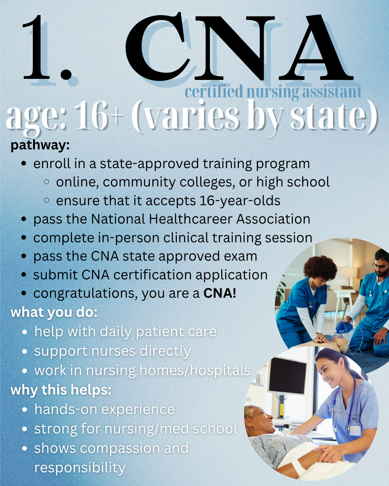
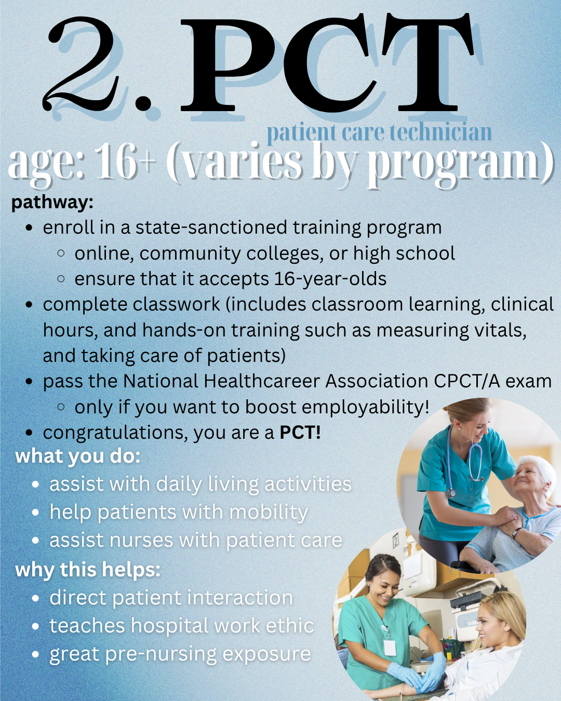
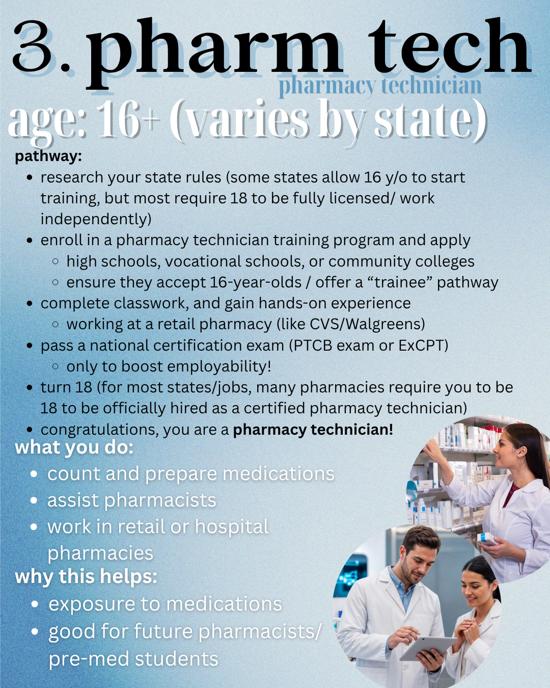
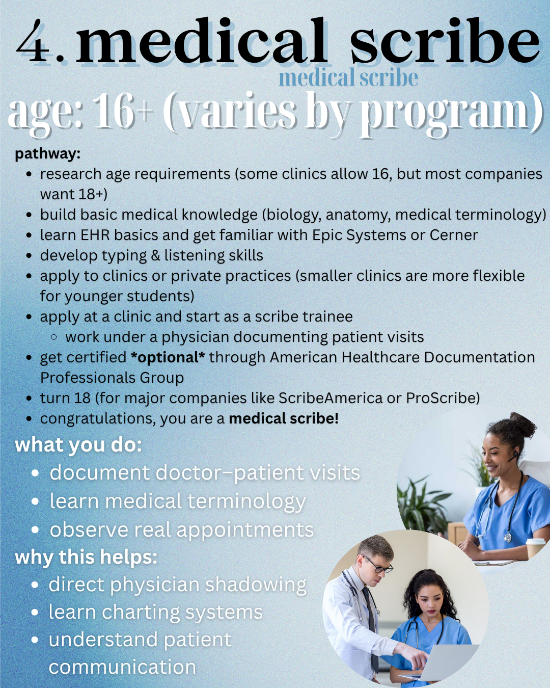
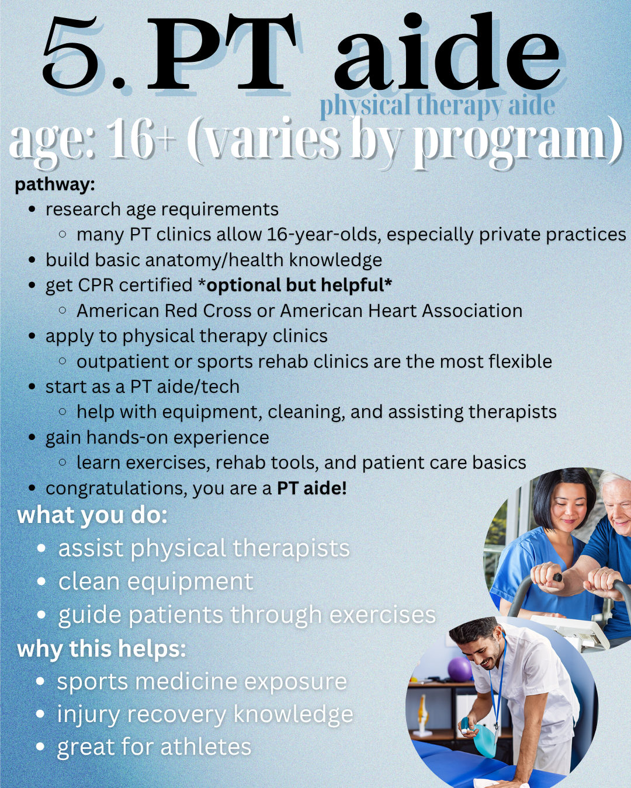
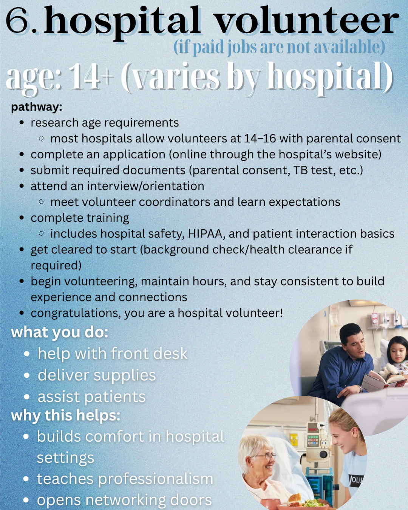
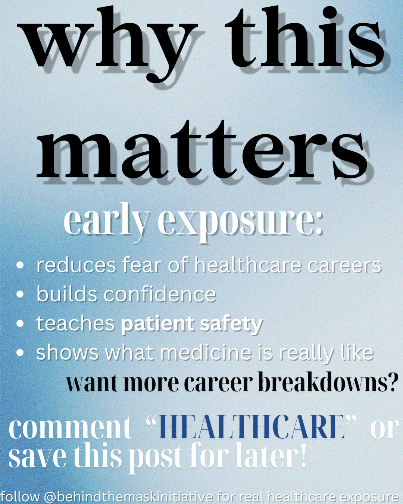

A complete breakdown of 6 real healthcare roles teens can pursue — CNA, PCT, Pharmacy Tech, Medical Scribe, PT Aide, and Hospital Volunteer — with pathways, responsibilities, and why each one helps your future.






